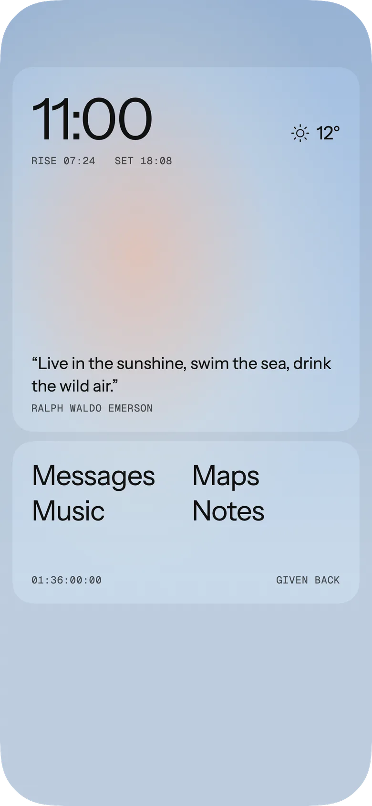
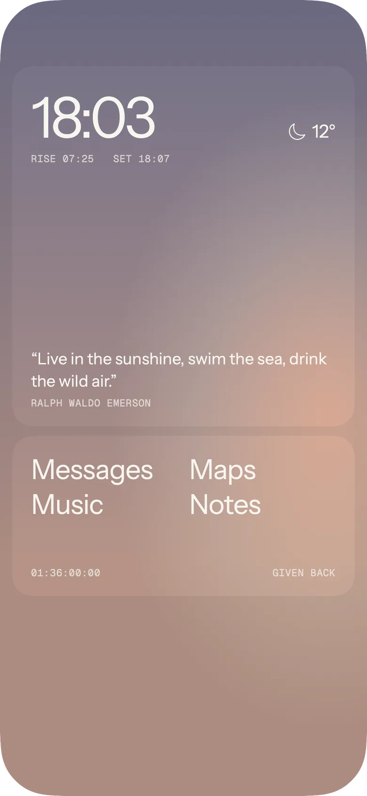
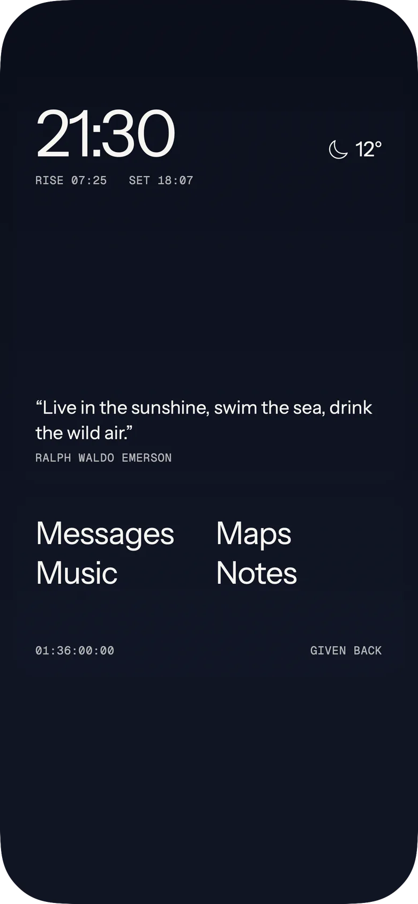
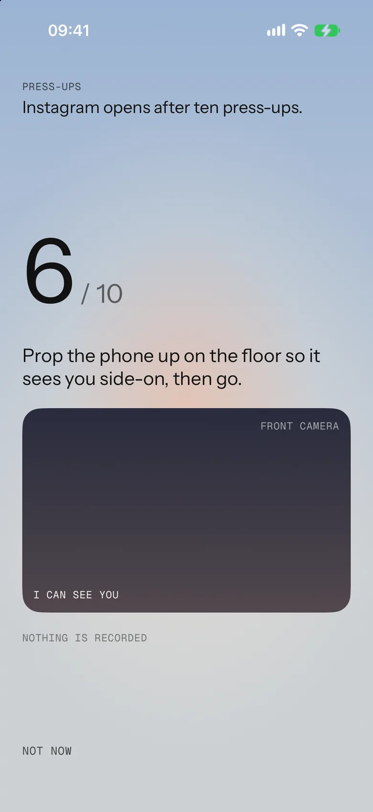
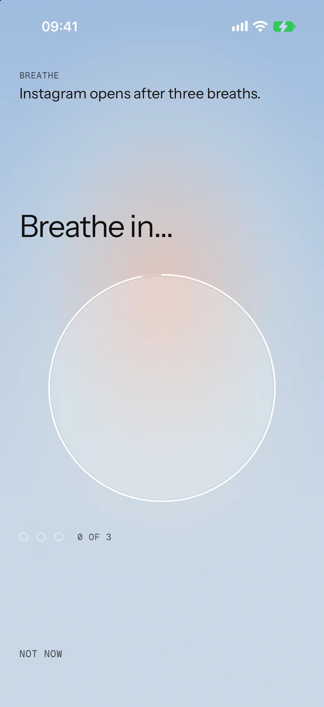
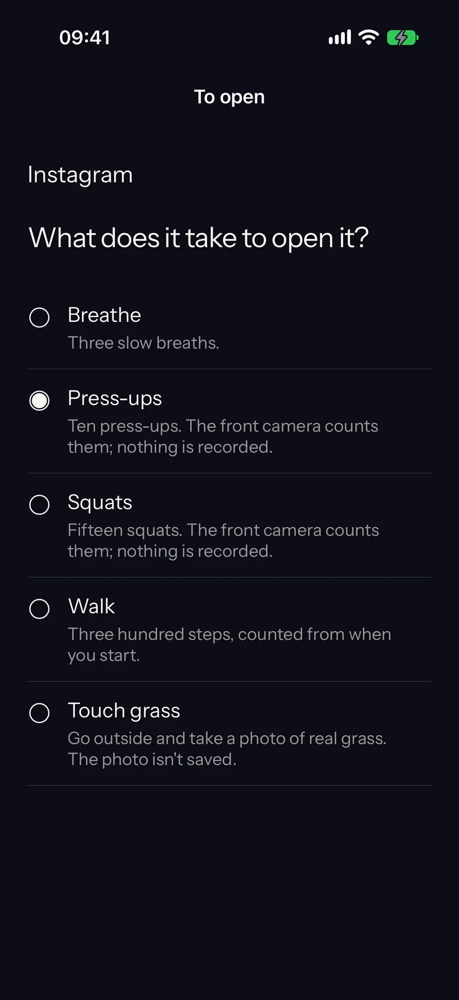

App in six weeks
Aglo, our own iPhone app, went from a first sketch to the App Store in eleven days.
AppAglo, a quiet home screen
MadeIdentity, app, site, store
Brief to store11 days
NowLive, version 1.2
a-glo.comThe site opens with one slow breath, then shows the sky over your city right now.
The brief
Get the apps you waste time on off your home screen. Leave the sky, the time and the five apps you need.
When you open one of the others, Aglo asks for something first: three slow breaths, or ten press-ups counted by the front camera. Nothing is recorded or sent.



Day to nightThe widgets paint the real sky for where you are, from the sun’s height.
15 OctBrief agreed
16 OctFirst build on a phone
20 Octa-glo.com live
21 OctApple approves 1.0
26 Oct1.1 on the App Store
30 Oct1.2 released
The real datesWe held 1.0 back after Apple approved it, so launch day had paid plans ready.



The unlockPick what it takes to open each app. Press-ups are counted on the phone.
What we made
- IdentityA flat half sun for the icon, and the wordmark
- AppSwiftUI, home screen widgets, Screen Time shield, unlock tasks
- Paid plansMonthly, yearly and lifetime, through the App Store
- Privacy“Data Not Collected” on the App Store label
- Websitea-glo.com with its opening breath and email sign-up
- StoreListing, screenshots, review notes, three releases
For a client
Your app takes six weeks, not eleven days. The extra time is for you: two rounds of your feedback, your own Apple account, and a week of testing with your people before it goes in front of Apple.
Six weeks
- Week 1Brief, sketches of every screen, the icon
- Weeks 2–3Built and on your phone, a new build every few days
- Week 4Your testers on TestFlight, fixes from what they say
- Week 5Store listing, screenshots, website, submit to Apple
- Week 6Approved, released, first numbers in
You own the code, the Apple account and the app. We hand over everything.